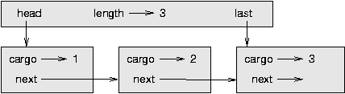

Este capítulo apresenta dois TDAs: Fila e Fila por Prioridade. Na nossa vida diária, fila é um alinhamento de consumidores aguardando algum tipo de serviço. Na maioria dos casos, o primeiro da fila é o primeiro a ser atendido. Mas há exceções. No aeroporto, passageiros cujo vôo vai decolar logo, às vezes são chamados primeiro ao balcão do check-in, mesmo que estejam no meio da fila. No supermercado, é comum na fila do caixa alguém deixar passar na frente uma pessoa que chega à fila só com um ou dois produtos na mão.
A regra que determina quem é o próximo da fila chama-se política de enfileiramento. A política de enfileiramento mais simples chama-se FIFO, sigla de first-in-first-out: primeiro a entrar, primeiro a sair. A política de enfileiramento mais geral é o enfileiramento por prioridade, em que se atribui uma prioridade a cada pessoa da fila e a que tiver maior prioridade vai primeiro, independente da sua ordem de chegada. Dizemos que essa é a política mais geral de todas, porque a prioridade pode ser baseada em qualquer coisa: hora de partida do vôo; quantos produtos a pessoa vai passar pelo caixa; o grau de prestígio da pessoa. É claro que nem todas as políticas de enfileiramento são “justas”, mas o que é justo depende do ponto de vista.
O TDA Fila e o TDA Fila por Prioridade têm o mesmo conjunto de operações. A diferença está na semântica das operações: a fila usa a política FIFO; e a fila por prioridade (como o próprio nome sugere) usa a política de enfileiramento por prioridade.
O TDA Fila é definido pelas seguintes operações:
A primeira implementação que vamos ver de um TDA Fila chama-se fila encadeada porque é feita de objetos Nós encadeados. A definição da classe é a seguinte:
class Queue:
def __init__(self):
self.length = 0
self.head = None
def isEmpty(self):
return (self.length == 0)
def insert(self, cargo):
node = Node(cargo)
node.next = None
if self.head == None:
# if list is empty the new node goes first
self.head = node
else:
# find the last node in the list
last = self.head
while last.next: last = last.next
# append the new node
last.next = node
self.length = self.length + 1
def remove(self):
cargo = self.head.cargo
self.head = self.head.next
self.length = self.length - 1
return cargo
Os métodos isEmpty e remove são idênticos aos métodos isEmpty e removeFirst de LinkedList. O método insert é novo e um pouco mais complicado.
Queremos inserir novos itens no fim da lista. Se a fila estiver vazia, basta fazer head apontar ao novo nó. Se não, percorremos a lista até o último nó e lá penduramos o novo nó. É possível identificar o último nó porque o seu atributo next é None.
Existem duas invariantes para um objeto Fila bem formado: o atributo length deve ser o número de nós na fila, e o último nó deve ter seu atributo next igual a None. Estude o método até ficar convencido de que ele preserva ambas invariantes.
Quando invocamos um método, normalmente não estamos preocupados com os detalhes da sua implementação. Porém, há um certo “detalhe” que pode ser bom conhecer: as características de performance do método. Quanto tempo leva, e como o tempo de execução muda à medida em que aumenta o número de itens da coleção?
Primeiro, olhe para remove. Não há laços ou chamadas de função aqui, o que sugere que o tempo de execução desse método é sempre o mesmo, toda vez. Um método assim é chamado de operação de tempo constante. Na verdade, o método pode ser ligeiramente mais rápido quando a lista está vazia, uma vez que ele pula o corpo da condicional, mas essa diferença não é significativa. XXX: o condicional só aparece na re-implementação do método na classe ImprovedQueue, p.200; essa inconsistência pode ser conferida também nas páginas 198-199 do livro original (PDF e impresso).
A performance de insert é muito diferente. No caso geral, temos de percorrer a lista para achar o último elemento.
Este percurso leva um tempo proporcional à extensão da lista. Uma vez que o tempo de execução é uma função linear da extensão, dizemos que este método opera em tempo linear. Isso é bem ruim, se comparado com o tempo constante.
Queremos uma implementação do TDA Fila que possa realizar todas as operações em tempo constante. Uma maneira de fazer isso é modificar a classe Fila, de modo que ela mantenha a referência tanto ao primeiro quanto ao último nó, como mostra a figura:
A implementação de ImprovedQueue tem essa cara:
class ImprovedQueue:
def __init__(self):
self.length = 0
self.head = None
self.last = None
def isEmpty(self):
return (self.length == 0)
Até agora, a única mudança é o atributo last. Ele é usado nos métodos insert e remove:
class ImprovedQueue:
# ...
def insert(self, cargo):
node = Node(cargo)
node.next = None
if self.length == 0:
# if list is empty, the new node is head and last
self.head = self.last = node
else:
# find the last node
last = self.last
# append the new node
last.next = node
self.last = node
self.length = self.length + 1
Uma vez que last não perde de vista o ultimo nó, não é necessário buscá-lo. Como resultado, esse método tem tempo constante.
Mas essa rapidez tem preço. É preciso adicionar um caso especial a remove, para configurar last para None quando o ultimo nó é removido:
class ImprovedQueue:
#...
def remove(self):
cargo = self.head.cargo
self.head = self.head.next
self.length = self.length - 1
if self.length == 0:
self.last = None
return cargo
Essa implementação é mais complicada que a primeira, e mais difícil de se demonstrar que está correta. A vantagem é que o objetivo foi atingido – tanto insert quanto remove` são operações de tempo constante.
Como exercício, escreva uma implementação do TDA Fila usando uma lista nativa do Python. Compare a performance dessa implementação com a de ImprovedQueue, para filas de diversos comprimentos.
O TDA Fila por Prioridade tem a mesma interface que o TDA Fila, mas semântica diferente. Mais uma vez, a interface é a seguinte:
A diferença semântica é que o item removido da fila não é necessariamente o que foi incluído primeiro e, sim, o que tem maior prioridade. Que prioridades são essas e como elas se comparam umas com as outras não é especificado pela implementação Fila por Prioridade. Isso depende de quais itens estão na fila.
Por exemplo, se os itens da fila tiverem nome, podemos escolhê-los por ordem alfabética. Se for a pontuação de um jogo de boliche, podemos ir da maior para a menor, mas se for pontuação de golfe, teríamos que ir da menor para a maior. Se é possível comparar os itens da fila, é possível achar e remover o que tem maior prioridade. Essa implementação da Fila por Prioridade tem como atributo uma lista Python chamada items, que contém os itens da fila.
class PriorityQueue:
def __init__(self):
self.items = []
def isEmpty(self):
return self.items == []
def insert(self, item):
self.items.append(item)
O método de inicialização, isEmpty, e insert são apenas uma fachada para operações básicas de lista. O único método interessante é remove:
class PriorityQueue:
# ...
def remove(self):
maxi = 0
for i in range(1,len(self.items)):
if self.items[i] > self.items[maxi]:
maxi = i
item = self.items[maxi]
self.items[maxi:maxi+1] = []
return item
No início de cada iteração, maxi armazena o índice do maior item (a prioridade mais alta de todas) que vimos até agora. A cada volta do laço, o programa compara o i-ésimo item ao campeão. Se o novo item for maior, maxi recebe o valor de i.
Quando o comando for se completa, maxi é o índice do maior item. Esse item é removido da lista e retornado.
Vamos testar a implementação:
>>> q = PriorityQueue()
>>> q.insert(11)
>>> q.insert(12)
>>> q.insert(14)
>>> q.insert(13)
>>> while not q.isEmpty(): print q.remove()
14
13
12
11
Se a fila contém números ou strings simples, eles são removidas em ordem numérica decrescente ou alfabética invertida (de Z até A). Pyhton consegue achar o maior inteiro ou string porque consegue compará-los usando os operadores de comparação nativos.
Se a fila contém objetos de outro tipo, os objetos têm que prover um método __cmp__. Quando remove usa o operador > para comparar dois itens, o método __cmp__ de um dos itens é invocado, recebendo o segundo item como argumento. Desde que o método __cmp__ funcione de forma consistente, a Fila por Prioridade vai funcionar.
Como exemplo de um objeto com uma definição não-usual de prioridade, vamos implementar uma classe chamada Golfer (golfista), que mantém registro dos nomes e da pontuação de golfistas. Como sempre, começamos definindo __init__ e __str__:
class Golfer:
def __init__(self, name, score):
self.name = name
self.score= score
def __str__(self):
return "%-16s: %d" % (self.name, self.score)
O método __str__ usa o operador de formato para colocar nomes e pontuações em colunas arrumadas.
Em seguida, definimos uma versão de __cmp__, ma qual a pontuação mais baixa fica com prioridade máxima. Como sempre, __cmp__ retorna 1 se self é “maior que” other, -1 se self é “menor que” other, e 0 se eles são iguais.
class Golfer:
#...
def __cmp__(self, other):
if self.score < other.score: return 1 # less is more
if self.score > other.score: return -1
return 0
Agora estamos prontos para testar a fila por prioridade com a classe Golfer:
>>> tiger = Golfer("Tiger Woods", 61)
>>> phil = Golfer("Phil Mickelson", 72)
>>> hal = Golfer("Hal Sutton", 69)
>>>
>>> pq = PriorityQueue()
>>> pq.insert(tiger)
>>> pq.insert(phil)
>>> pq.insert(hal)
>>> while not pq.isEmpty(): print pq.remove()
Tiger Woods : 61
Hal Sutton : 69
Phil Mickelson : 72
Como exercício, escreva uma implementação do TDA Fila por Prioridade usando uma lista encadeada. Mantenha a lista em ordem para que a remoção seja uma operação de tempo constante. Compare a performance dessa implementação com a implementação usando uma lista nativa do Python.